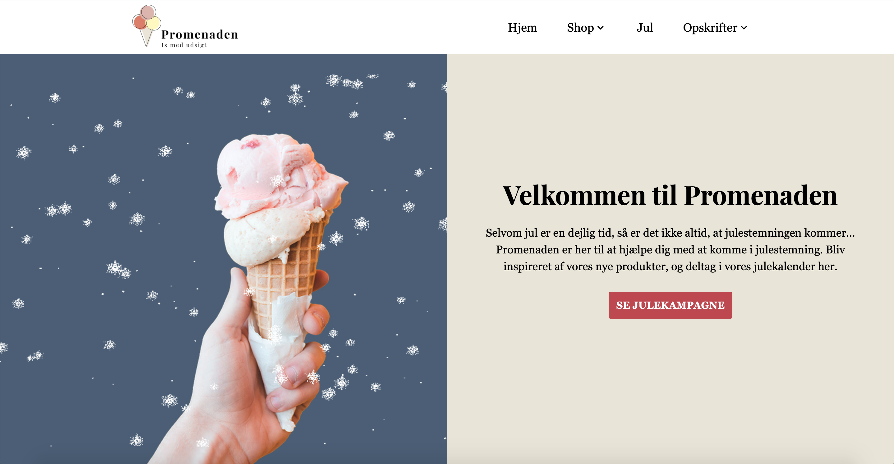
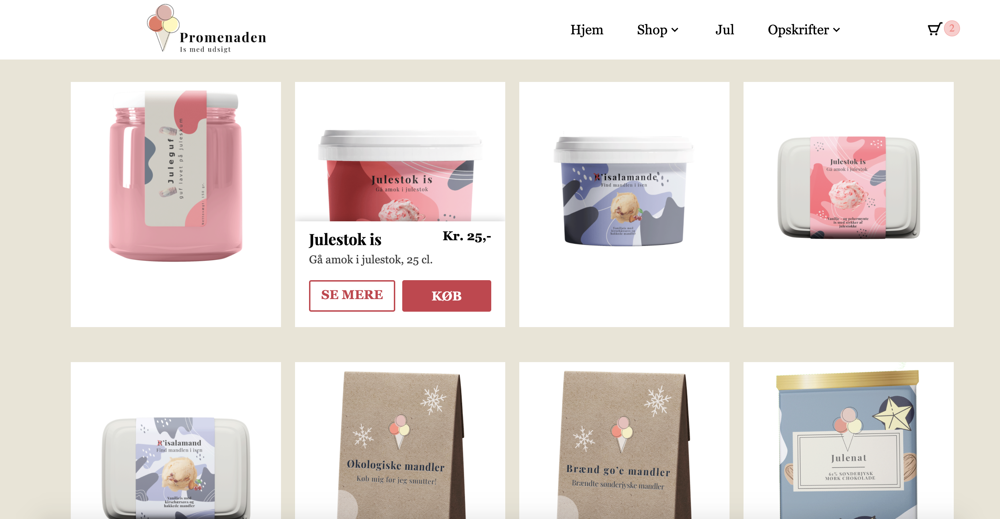
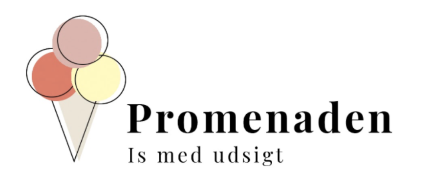

Promenaden Sønderborg
  Promenaden er en isbutik i Sønderborg, som kun har åbent i sommerhalvåret. Til vores eksamenprojekt på 2. semester skabte vi i den forbindelse en online løsning, som skulle give dem mulighed for at sælge deres produkter hele året rundt.
I opgaven skabte vi desuden en visuel identitet for virksomheden samt lavede labeldesigns og en julekampagne.
Under udviklingen af hjemmesiden stiftede vi bl.a. bekendskab med, hvordan man opstiller en webshop samt en betalingsform.
Klient: Promenaden Sønderborg
Dato: december 2020
Github: https://github.com/celineholst/Eksamen-2-semester
URL: https://celineholst.github.io/Eksamen-2-semester/